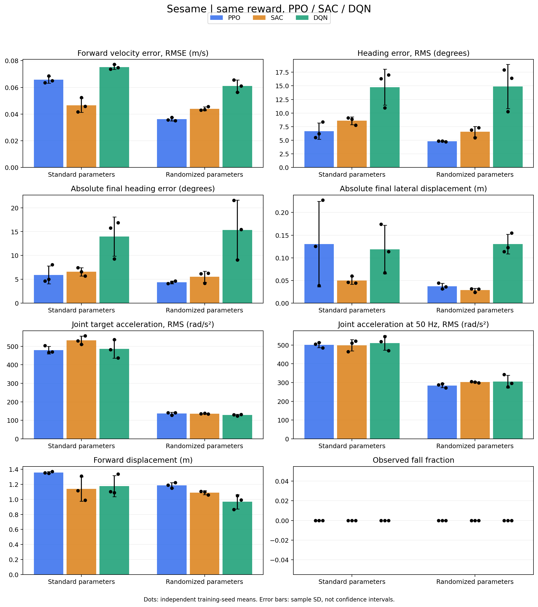
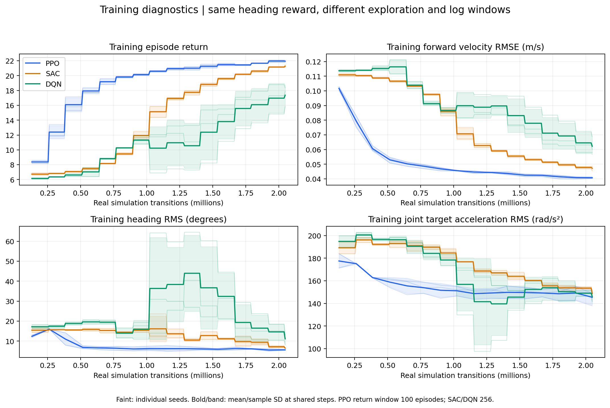

范围：正式最终模型评估。
基线方法：PPO、SAC、DQN。 三种方法均使用加入航向项后的改进奖励（航向系数 0.5）和完整域随机化。正式实验中，每个训练种子使用 204.8 万真实仿真步。
DQN 使用分支网络和 Double DQN 更新，每个关节离散为 5 档动作；PPO、SAC 使用连续动作。表中统一使用算法名称，具体实现差异保留在此说明。
9 个最终模型 × 2 种物理条件 × 2 个测试种子 × 64 个首回合，共 2304 回合。测试种子 [25042, 26042]；同条件下初态与实际物理参数逐项一致。
每项先求单模型的 128 回合均值，再报告 3 个训练种子的均值 ± 样本标准差。标准参数采用参考设置，随机参数在训练的域随机化范围内采样。
主指标为前向速度误差。 RMSE 表示均方根误差，RMS 表示均方根。目标是沿世界 +X 方向以 0.10 m/s 行走；下式的 mean 表示回合内控制步的平均。
| 指标 | 计算方式 | 单位与判断标准 |
|---|---|---|
| 前向速度误差（RMSE） | √mean((vx−0.10)²) |
m/s，越低越好 |
| 平面速度误差（RMSE） | √mean((vx−0.10)²+vy²) |
m/s，同时检查前进和横向速度，越低越好 |
| 航向误差（RMS） | √mean(ψ²)；ψ 是相对 +X 的偏航角，统一到 −180° 至 180° |
°，越低越好 |
| 终点偏航 | 终点偏航角的绝对值 | °，越低越好；与全回合航向 RMS 分开报告 |
| 终点侧移 | 终点与起点的 y 坐标差的绝对值 | m，越低越好 |
| 前向位移 | x终点−x起点 |
m，10 秒目标约 1 m，并非越远越好 |
| 跌倒率 | 跌倒回合数 ÷ 总回合数 | %，越低越好 |
| 关节目标加速度（RMS） | 对执行的关节目标角度做二阶差分，再求 RMS | rad/s²，结合速度和位移判断平滑性 |
| 实际关节加速度（RMS） | 对仿真中的实际关节速度做一阶差分，再求 RMS | rad/s²，结合速度和位移判断平滑性 |
跌倒判定为机身根节点高度低于 0.023 m，或直立度低于 0.5（约对应整体倾斜超过 60°）。越界和无效状态单独记录，不自动计入跌倒。
加速度按 50 Hz（步长 0.02 秒）计算，对时间及 8 个关节取均方根，排除回合重置跳变；关节目标加速度从第 2 个控制步开始统计。这里的目标是经过动作裁剪、关节约束、时延和滞后后实际执行的目标，加速度数值不是抖动频率或物理瞬时峰值。
辅助记录关节目标变化率 RMS、原始动作裁剪比例、回合总奖励和回合时长。训练曲线用于观察学习过程，最终效果以固定策略的共同评估为准。
| 指标 | PPO | SAC | DQN |
|---|---|---|---|
| 航向误差（RMS，°） | 6.67631 ± 1.49776 | 8.57934 ± 0.70425 | 14.75773 ± 3.31275 |
| 前向速度误差（RMSE，m/s） | 0.06570 ± 0.00259 | 0.04661 ± 0.00543 | 0.07526 ± 0.00175 |
| 平面速度误差（RMSE，m/s） | 0.09213 ± 0.00263 | 0.07250 ± 0.00307 | 0.10198 ± 0.00080 |
| 前向位移（m） | 1.35693 ± 0.01226 | 1.13899 ± 0.16193 | 1.17694 ± 0.13963 |
| 终点偏航（°） | 5.90027 ± 1.87223 | 6.57458 ± 0.88000 | 13.96526 ± 4.10875 |
| 终点侧移（m） | 0.13040 ± 0.09445 | 0.04998 ± 0.00853 | 0.11843 ± 0.05352 |
| 跌倒率 | 0.00% | 0.00% | 0.00% |
| 关节目标变化率（RMS，rad/s） | 7.75781 ± 0.10673 | 7.20062 ± 0.23622 | 7.60414 ± 0.19222 |
| 关节目标加速度（RMS，rad/s²） | 479.74141 ± 20.59130 | 532.15772 ± 23.20241 | 485.56785 ± 49.86881 |
| 实际关节加速度（RMS，rad/s²） | 500.74063 ± 14.74403 | 499.05013 ± 30.46473 | 511.10778 ± 37.95809 |
| 原始动作裁剪比例 | 0.26142 ± 0.03540 | 0.00000 ± 0.00000 | 0.00000 ± 0.00000 |
| 回合总奖励 | 17.65459 ± 0.31897 | 19.23974 ± 0.76585 | 15.00361 ± 0.54525 |
| 回合时长（s） | 10.00000 ± 0.00000 | 10.00000 ± 0.00000 | 10.00000 ± 0.00000 |
| 指标 | PPO | SAC | DQN |
|---|---|---|---|
| 航向误差（RMS，°） | 4.79834 ± 0.09423 | 6.54713 ± 0.96951 | 14.86673 ± 4.05844 |
| 前向速度误差（RMSE，m/s） | 0.03610 ± 0.00129 | 0.04399 ± 0.00137 | 0.06102 ± 0.00462 |
| 平面速度误差（RMSE，m/s） | 0.05211 ± 0.00079 | 0.05794 ± 0.00075 | 0.08259 ± 0.00683 |
| 前向位移（m） | 1.18672 ± 0.03587 | 1.08885 ± 0.02581 | 0.96873 ± 0.09549 |
| 终点偏航（°） | 4.36409 ± 0.28772 | 5.53004 ± 1.17376 | 15.35361 ± 6.24420 |
| 终点侧移（m） | 0.03732 ± 0.00661 | 0.02852 ± 0.00430 | 0.13043 ± 0.02168 |
| 跌倒率 | 0.00% | 0.00% | 0.00% |
| 关节目标变化率（RMS，rad/s） | 4.16367 ± 0.06197 | 3.64652 ± 0.08680 | 3.74249 ± 0.15323 |
| 关节目标加速度（RMS，rad/s²） | 136.35004 ± 7.88123 | 135.72799 ± 1.68107 | 128.31349 ± 4.21286 |
| 实际关节加速度（RMS，rad/s²） | 284.20722 ± 11.08390 | 302.08982 ± 3.89384 | 305.33326 ± 34.05767 |
| 原始动作裁剪比例 | 0.41982 ± 0.04493 | 0.00000 ± 0.00000 | 0.00000 ± 0.00000 |
| 回合总奖励 | 23.30128 ± 0.12577 | 22.15382 ± 0.25579 | 17.84820 ± 1.33169 |
| 回合时长（s） | 10.00000 ± 0.00000 | 10.00000 ± 0.00000 | 10.00000 ± 0.00000 |
性能图 · 训练曲线 · 逐回合数据 · 逐种子数据 · 完整统计

